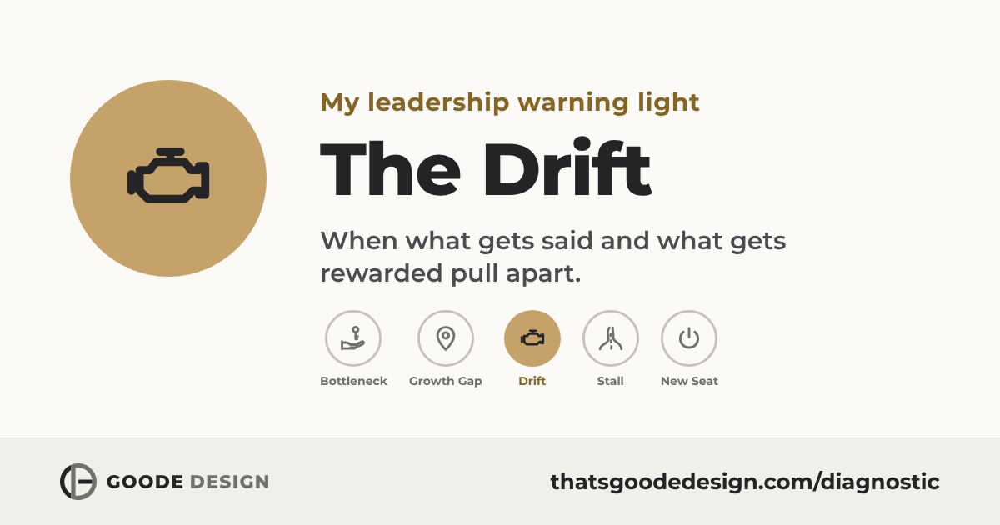

Leadership warning light
The Drift: words and rewards pull apart
The culture has not collapsed. It has drifted, and people are reading the signals. When what gets said and what gets rewarded start to separate, the values turn into wallpaper.


What it looks like
- News travels unevenly. Some people hear early and others late or never, which creates insiders and outsiders.
- Decisions contradict the stated values, and people learn the culture is aspirational, not operational.
- Recognition looks political. People stop believing the stated culture and adapt to the actual one.
MIT Sloan research found a toxic culture is ten times more powerful than pay in predicting how many people leave.
Where to start
Culture is taught by systems: who hears news first, who gets recognized, which decisions quietly contradict the values. That’s why another values session fades within a month. Book thirty minutes. We’ll find where the stated culture and the actual systems diverge, and design one alignment that rebuilds trust.
Read the CREATE ebook, $3.99 How CREATE works See the On-Board Diagnostic Or book thirty minutes
I run a real dashboard for a living. I came in skeptical of the metaphor – I left with a usable distinction between what’s actually a leading indicator and what’s just a soft signal I’d have noticed anyway.
Haven’t taken it yet?
Sensing drift but can’t name it? The free diagnostic takes about two minutes and shows which pattern is at work.
Next step